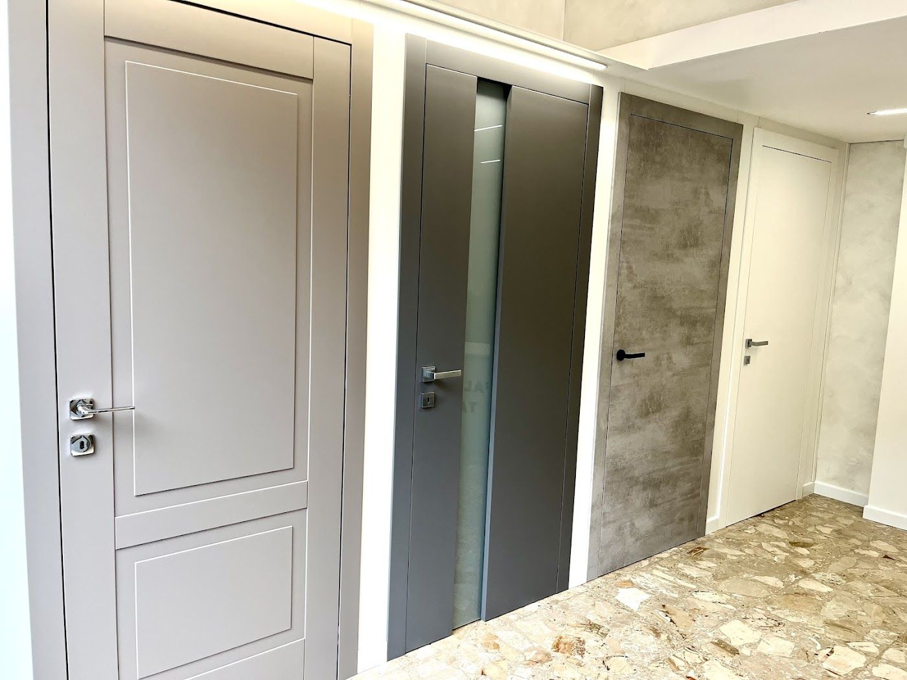

I
Porte interne
Porte nuove per tutta la casa: scegliamo insieme modello e finitura, poi le montiamo noi.
«Ha rifatto tutte le porte interne della casa e il risultato ha trasformato l'ambiente.»— Vittorio Gallo, su Google